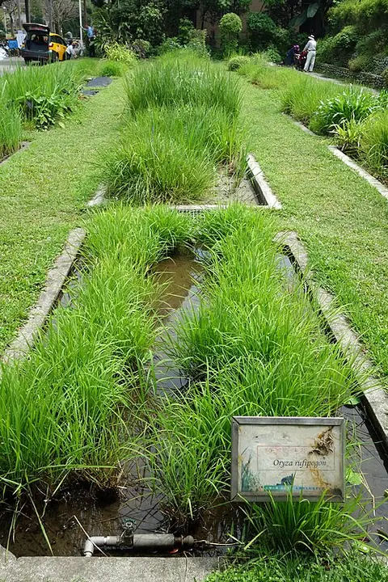

Wild rice
Wild rice is a wild seed or grain you can forage from October to December in Central forests, East, South India, West coast and Deccan, Northern plains and Northeast. Ancestor of cultivated rice, growing in ponds, ditches and lake edges. The awned grains shatter and fall as soon as they ripen. Sold as fasting rice (bhagar or nivara) in Maharashtra and the north.

When is wild rice in season in India?
Wild rice is usually in season October to December. Timing shifts with weather, latitude and altitude.
Where does wild rice grow in India?
Wild rice grows in Andaman and Nicobar Islands, Andhra Pradesh, Arunachal Pradesh, Assam, Bihar, Chandigarh, Chhattisgarh, Dadra and Nagar Haveli and Daman and Diu, Delhi, Goa, Gujarat, Haryana, Jharkhand, Karnataka, Kerala, Lakshadweep, Madhya Pradesh, Maharashtra, Manipur, Meghalaya, Mizoram, Nagaland, Odisha, Puducherry, Punjab, Sikkim, Tamil Nadu, Telangana, Tripura, Uttar Pradesh, Uttarakhand, West Bengal. Regions: Central forests, East, South India, West coast and Deccan, Northern plains, Northeast.
How do you recognise wild rice?
Ancestor of cultivated rice, growing in ponds, ditches and lake edges. The awned grains shatter and fall as soon as they ripen. Sold as fasting rice (bhagar or nivara) in Maharashtra and the north.
How do you harvest wild rice?
Wait until seed heads or pods are dry and ripe, then strip or shake them into a bag or onto a cloth before they shatter. Thresh, winnow and sun-dry the seeds well.
How do you eat wild rice?
Cooked like rice, or as fasting khichdi.
How do you store wild rice?
Dry the grain fully, dehusk and store like rice. Keeps a year.
What is wild rice good for?
Calories, Protein.
What can you cook with wild rice?
- Bhagar / nivara khichdi: Wild rice or jungle rice cooked with peanuts, cumin, green chilli and ghee. The classic fasting meal.